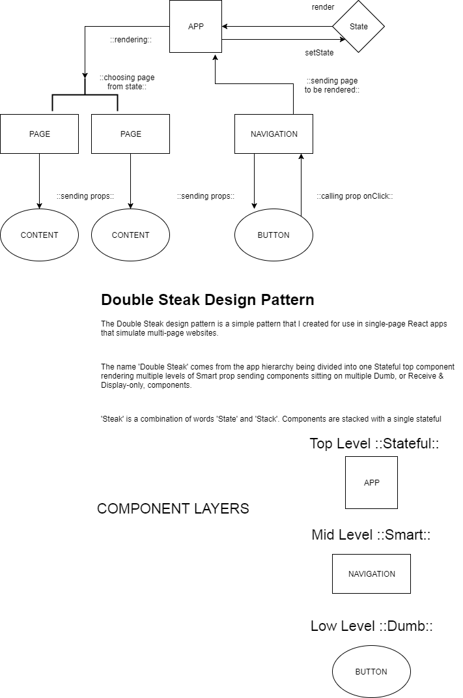

Design Process and Patterns (React Refactor 1)
First off, I want to say that the original site I based this project on is already pretty perfect. The purpose behind making this was purely for the practice itself. By doing it, I was able to refine a lot of abstract ideas I had about React design
in general, and it really helped make my "Double Steak" design pattern come to life with a relevant use case.
Now for some explanation and a picture.
Coming into the process itself, I first wanted to outline opportunities to make the refactor more appealing to me, personally, as a user. These opportunities I would use as overall guide points for the development. Here they are:
- Reduced Scrolling. This is a personal pet peeve for me. Unless I'm on a phone/tablet and can flick the screen to make the page fly up via simulated momentum, I dislike scrolling on pages, for the most part. The original site has
tons of awesome content, and I was going to try to preserve it via the next opportunity...
- Uniform page size. I split up the application using my Double Steak design pattern. With the pattern, there are a handleful of persistent smart components sitting on a bunch of non-persistent dumb/display components. The APP component
sits at the top and breaks down into three of these persisting elements: the Navigation, the current Page, and the Footer. Their heights are static and widths are relative to screen width, enabling the uniform appearance.
- Carousel Components. Setting a uniform size for the app meant having to sacrifice the content of the original site... Except it didn't. I created a carousel component that holds all of the content in multiple slides. The user
can navigate through them manually or allow the carousel to change on its own.
- Language Translation. I translated most of the app into Normansk, which is a mix of Swedish, Danish, Norwegian, and English. The reasoning was to avoid infringing on intellectual property rights - that's rude after all. I did
the same kind of thing with using icons from Font Awesome instead of using the company's assets.
What can I improve?
A lot. I started this project not knowing a lot of things. I concluded it understanding much more. That means that, in general, I'd like to improve this project in a few ways:
- Carousels and Slides. Making my code DRYer is a priority. The first thing that I'd like to address is how I structured the Carousels. Right now, the carousels are specific to each page and they each contain unique slide elements.
This means duplicate logic and unnecessary files. Solution: Divide carousels into two components: Carousel and Slides. Each Page component will pass Carousel props like # of slides, slide types, and slides content which will
sit IN the Page component instead of individual carousels. Slides will inherit props and will display by being mapped programatically in the Carousel logic.
- Carousel logic. Again, an issue of DRYing code. Solution: Instead of containing the carousel functions in the Carousel components, I may throw it into a CarouselLogic file and import into the component.
- DRYer CSS. In the CSS I repeat a lot of information. Solution:I can fix this by replacing property values repeated x times with variables. I already laid out a variable scss module - as this was my original intent.
That list may shrink or grow based on what I address and what else I find that I can improve over time.
I like Design Patterns
All of my single-page sites/apps that simulate multi-pages follow a single design pattern, my own "Double Steak" pattern. I made a diagram to try and visualise the architecture of the pattern. Note: the Prëser page
contains its own 'content' component that is a mid-level smart component that passes properties to a LargeCard display component. The purpose for this was to layout ideas for refactoring the carousel/slide components AND to allow
the functionality of adding more than two pricing cards.
Below is a pic of the diagram, by the way.

Thanks for reading!
That's all for now - and I'm open to questions. Drop me a line on my LinkedIn or E-Mail.